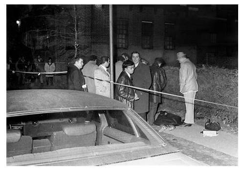
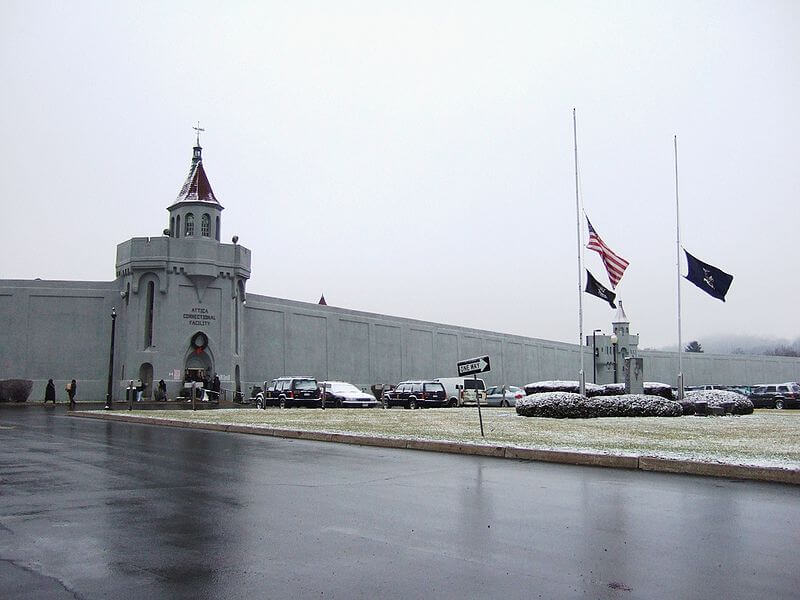
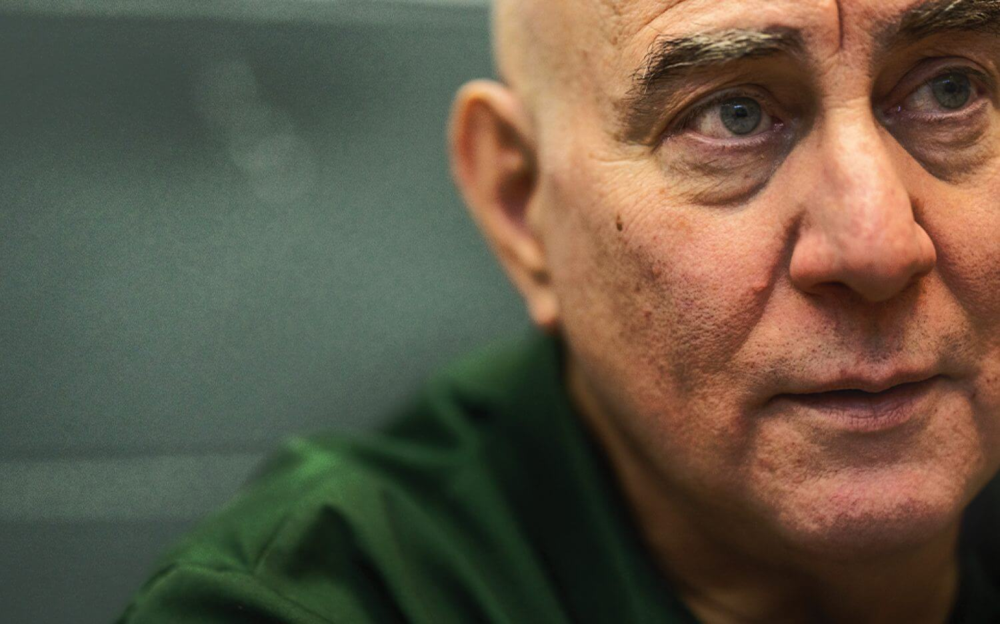

David Richard Berkowitz (Brooklyn, Nueva York; 1 de junio de 1953) es un asesino en serie estadounidense, conocido como "El hijo de Sam" o "El asesino del calibre 44". Cometía sus crímenes disparando a sus víctimas con un revólver Charter Arms
Bulldog, causándoles la muerte a seis de ellas. Poco después de su arresto en agosto de 1977, Berkowitz confesó haber asesinado a seis personas y haber herido a otras siete en 8 tiroteos en Nueva York entre 1976 y 1977, siendo encarcelado
posteriormente en 1977. Además, declaró que un demonio que había poseído al perro de su vecino le ordenó cometer los asesinatos. Berkowitz cambió luego su declaración y afirmó que fue el autor solamente de dos tiroteos, en los que asesinó
personalmente a tres personas e hirió a una cuarta. Las otras víctimas fueron asesinadas, según Berkowitz, por miembros de una violenta secta satánica de la cual él era miembro. Aun cuando permanece como la única persona culpada o procesada
por los tiroteos, algunas autoridades discuten que la declaración de Berkowitz es creíble: de acuerdo con John Hockenberry antiguamente de MSNBC y NPR, muchos oficiales involucrados en el caso original del «Hijo de Sam» sospecharon que más
de una persona cometió los homicidios. Hockenberry también informó que el caso fue reabierto en 1996 y que aún no ha sido cerrado.
Ataques
"
29 de julio de 1976, Donna Lauria y Jody Valenti estaban dentro de su coche cuando un hombre disparó contra ellas, provocando la muerte instantánea de Donna e hiriendo a Jody. 23 de octubre de 1976, Carl Denaro y Rosemary Keenan charlaban dentro de su
automóvil cuando un hombre desconocido les disparó cinco veces, lo que provocó heridas superficiales a Rose, mientras que Carl sufrió una grave lesión craneal. 26 de noviembre de 1976, Donna DeMasi y Joanne Lomino regresaban caminando del
cine cuando un hombre se acercó fingiendo hacerles una pregunta para luego dispararles, provocando graves heridas en Donna y Joanne, la cual quedó parapléjica. 30 de enero de 1977, Christine Freund y John Diel, una pareja de novios, se preparaban
para salir a bailar cuando su atacante disparó en tres ocasiones contra su vehículo, provocando heridas leves en John y graves en Christine, quien falleció en el hospital. 8 de marzo de 1977, Virginia Voskerichian. Su atacante se le acercó
y le disparó en la cara. Para tratar de protegerse, se cubrió el rostro con sus libros, pero aquel escudo improvisado no impidió su muerte. 17 de abril de 1977, Alexander Esaú y Valentina Suriani, una pareja de novios, se estaban besando en
su automóvil cuando se acercó un hombre y les disparó en dos ocasiones a cada uno. Valentina murió en el lugar, mientras que Alexander falleció en el hospital varias horas después. 26 de junio de 1977, Sal Lupo y Judy Placido habían salido
de una discoteca y cuando se encontraban en su automóvil fueron alcanzados por tres disparos. Sus heridas fueron menores y ambos sobrevivieron. 31 de julio de 1977, Stacy Moskowitz y Robert Violante, novios, estaban dentro de un automóvil
estacionado cerca de un parque cuando un hombre se acercó y les disparó. Stacy murió horas después en el hospital, mientras que Robert perdió un ojo y el 80% de la visibilidad del otro.
Indicios forenses en la escena del crimen
"
En este caso concreto, no encontraremos indicios de tipo biológico sino que, más bien, indicios de tipo explosivo y combustión. Esto sucedió al encontrar una bala del arma que solía utilizar en la escena del crimen, lo que dio pistas sobre su modus operandi.
Características de la escena. La escena del crimen tenía lugar en sitios públicos, abiertos, teniendo preferencia por boca calles en horarios nocturnos o de madrugada. El sujeto, solía llegar a pie a la escena del crimen, sin embargo, según
un testimonio ofrecido por un testigo ocular, el primer ataque lo hacía en un automóvil amarillo. Características de las víctimas. Se trataba de sujetos que salían de locales nocturnos, a altas horas de la noche y solían dirigirse a sus automóviles.
Además, eran sujetos de clase media alta que estaban en circunstancias de acercamiento amoroso, sin embargo, a veces eran sujetos que simplemente interactuaban socialmente. Esto las hacía más accesibles debido al lugar por ser público. Método
de aproximación. Atacaba a sus víctimas por sorpresa, incluso llegaba a atacarles por la espalda disparándoles a quemarropa. Método de ataque. No tenía ninguno concreto, no tenía un previo acercamiento verbal o físico con ellas. Las atacaba
con su arma y luego comenzaba a huir de la escena del crimen sin dejar rastro. Finalmente, se comenzó a manejar la hipótesis de que lo que jugó en su contra fue su patología mental, su psicosis, más específicamente su esquizofrenia y aspectos
más avanzados de la paranoia de personalidad. Esto se debe a que conforme avanzó el caso y comenzó a haber más alarma social, aumentó su interés por sentirse alguien en la sociedad lo que no fue positivo para continuar en el anonimato, así
que comenzó a descuidar y fallar en su modus operandi. Referencia recomendada: "El hijo de Sam": un caso paradigmático de la psicología forense actual
Condena
"
El 10 de agosto de 1977 fue detenido, después no tardaría en confesar sus crímenes. Culpó al perro de su vecino de ordenarle los actos que había cometido. También afirmó escuchar voces demoniacas en su interior para que no dejase de hacerlo y continuara
matando. En 1978, se elaboró un informe pericial que detallaba un diagnóstico de esquizofrenia paranoide. La acusación rebatió el estudio y alegó que era plenamente consciente de sus actos. De esta forma, David Berkowitz fue condenado a cadena
perpetua.
¿Qué pasó con Berkowitz y dónde está ahora?
"
Berkowitz fue evaluado para poder ser juzgado -a pesar de que sus abogados se negaron a que se declarase inocente por razones de locura- y se declaró culpable, en una especie de mundo al revés tipo Trampa 22, la novela de Joseph Heller en la que el protagonista
necesita demostrar que está mentalmente inestable, pero el acto de pedir ser eximido demostraría que está cuerdo. En el juicio de Berkowitz, éste intentó saltar por una ventana de la sala, y escribió "no estoy bien, no estoy nada bien" en
un cuaderno de dibujo, pero a pesar de ello, fue juzgado, declarado culpable y condenado a 25 años de prisión por cada asesinato, que se cumplirían consecutivamente. Actualmente, Berkowitz sigue cumpliendo condena en la prisión de Shawangunk,
al norte del estado de Nueva York, y se ha convertido en un cristiano renacido y pide que se le llame El Hijo de la Esperanza, en lugar de El Hijo de Sam. Además de escribir ensayos en sitios web cristianos evangélicos, publicó sus memorias
en 2006, llamdas Son of Hope: The Prison Journals of David Berkowitz. En su propio sitio web, escribe ahora: "Lamento profundamente el dolor, el sufrimiento y la pena que he causado a las víctimas de mis crímenes. Me aflijo por los heridos
y por los familiares de quienes perdieron a un ser querido a causa de mis egoístas acciones. Me arrepiento de lo que he hecho y me atormenta". La teoría de la secta satánica puede ser un punto de partida conveniente para un apasionante y especulativo
documental sobre crímenes de cuatro capítulos -en el que el público encuentra más fácil considerar a los malhechores como parte de un monstruoso colectivo de adoradores del diablo, en lugar de un simple hombre de aspecto normal-, pero la verdad
es probablemente mucho más simple: David Berkowitz era un hombre profundamente perturbado que llevó a cabo todo esos horribles asesinatos.
 "
"